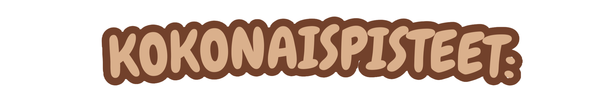

Tällä sivustolla on kuusi erilaista ja opettavaista eläimiin liittyvää peliä.
Pääset tutustumaan muun muassa metsän jälkiin, maatilan eläimiin ja eri eläinten ulkonäköön.
Pelien tekijät:
- Kuka kävi täällä?: Valtteri Lämsä
- Pörriäiset ja pensselit: Viivi Olmala
- Maatilan muistileikki: Hilma Korkiakoski
- Safarin eläimet: Inka Haarahiltunen
- Hiiri ja herkkupolku: Emma Huovinen
- Totta vai hupia? Viidakon ihmeet: Jarkko Rahja
Tälle sivulle lasketaan myös yhteispisteet jokaisesta pelistä, joten pääset helposti seuraamaan edistymistäsi.
